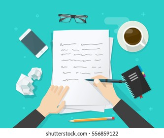

I am Reemi Rana
Web developer
Hello!
I am a software developer
.I 'm also a learner.
I love my family.
HOBBIES:
Since my childhood, I have develop an aim of learning computer languages
so i tried some languages after my grade 12 and it was C++ and Java.
Apart from academic part , i also have some other hobbies such as
Dancing, Singing, Painting, Acting and Drawing skills
.
MY SKILLS:
DESIGN & WEB DEVELOPER 
Overtime, I have achieved a wealth of experience in designing as well as developing web softwares.
WRITING CHALLENGE 
I am the undoubted queen of writing challlenges. My favourite poem is "THE ROAD NOT TAKEN"
and
my favourite novel is "THE INVISIBLE MAN"
GET IN TOUCH
Let's talk about how to increase imagination while writing any topic.
We can write while eating good snacks.